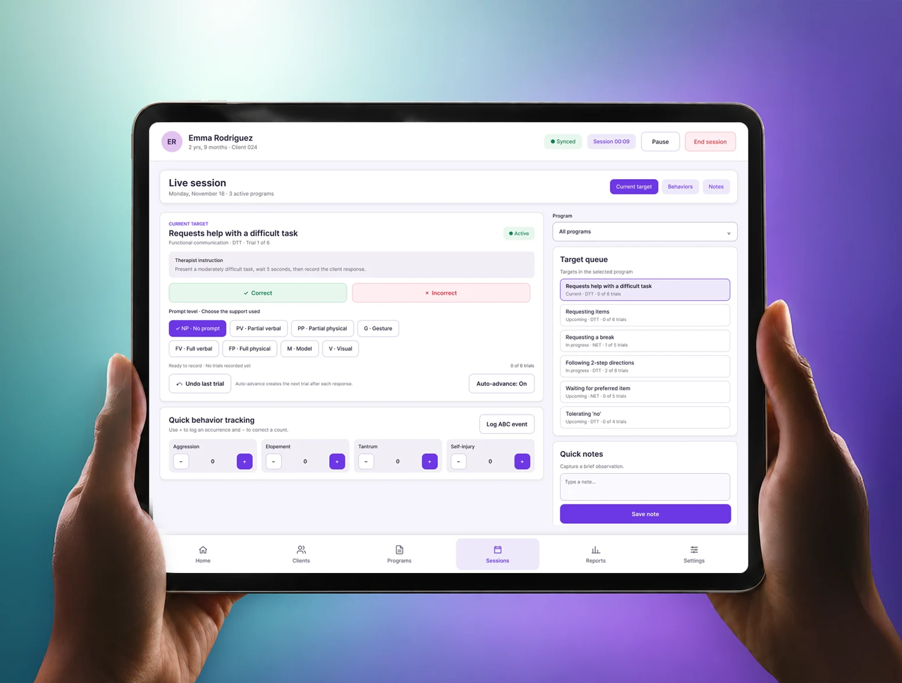
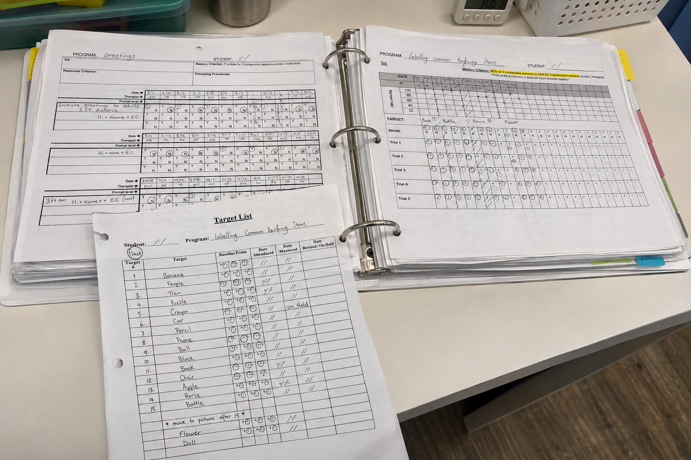
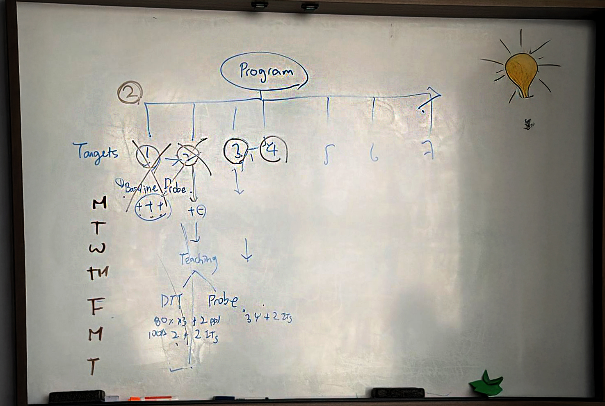

Manual documentation extended an already demanding clinical day.
ABA CARE MANAGEMENT · 2025
Product design · Healthcare · Zero to one
Replacing hours of paper-based ABA documentation with one connected care workflow.
I partnered with an ABA clinic to translate binders, handwritten session data and manual reporting into a digital system for assessments, programs, targets and progress.

Role
Lead product designer
Partners
ABA supervisor and senior therapist
Timeline
November 2025 to present
Scope
Research, systems design, UI and QA
01 · Problem
Situation
Four-to-five-hour therapy sessions were followed by hours of administrative work.
At Kids Clinic Ajax, each client had a large binder containing assessments, programs, targets and session records. Therapists recorded performance on paper during care, then reconstructed that data into graphs, clinical notes and parent updates after the session.
Task
Understand the full ABA workflow and identify where a digital product could remove repetitive work without disrupting care.
The system needed to reflect a journey that can span months: intake, assessment selection, assessment planning, treatment programs, multiple active targets, session data and progress reporting.
Care plans, target sheets, notes and graphs lived in separate records.
Repeated transcription consumed staff time and clinic capacity.
Source material
The paper workflow behind every session.
These images will show the physical documentation therapists relied on before the workflow was translated into a connected product.

Image placeholderGraphs, notes and parent reportsExamples of the administrative work completed after each session.
02 · Solution
Action
I designed one longitudinal workflow from assessment planning to parent reporting.
Working directly with the clinic’s ABA supervisor and senior therapist, I mapped how a client moves through care and converted specialist terminology, paper artifacts and clinical decisions into a usable product model.
Learn the domain
Used multiple working sessions to understand VB-MAPP, ABLLS-R, PEAK, AFLS and the decisions surrounding assessment selection.
Model the system
Connected clients, assessments, programs, targets, trials, notes and progress as reusable product objects.
Design for live use
Prioritized fast session entry so therapists could record one target after another or choose targets in a different order.
Automate the output
Structured captured data to support progress graphs, clinical reports and parent-facing updates.
Discovery with the ABA team
Understanding how programs move from baseline to mastery.
The ABA supervisor and senior therapist walked me through their workflow across several discovery sessions. Together, we mapped how programs contain multiple targets, how baseline probes determine the teaching approach and how therapists track progress toward mastery. This helped me translate clinical terminology and decision-making into a connected digital workflow.

Designed workflow
One connected path from clinical planning to progress review.
Each session becomes part of the client’s longitudinal care story instead of another isolated paper record.
01Assess
→Select and complete the appropriate assessment.
02Plan
→Define programs and active targets.
03Capture
→Record trials, prompts and notes during care.
04Report
Generate progress views and parent updates.
Information model
From scattered documents to reusable product objects.
The interface organizes the recurring concepts behind the source material so they can support consistent workflows and future iteration.
The larger structure of active treatment.
Specific outcomes connected to the plan.
Observations recorded in context.
Longitudinal information prepared for review.
03 · Implementation
Action
I carried the system from clinical requirements into detailed interface patterns and engineering handoff.
I documented requirements, prioritized the first release, designed high-fidelity flows within the existing CliniScripts ecosystem and reviewed implementation with engineering. The interaction model keeps the active target and its most frequent actions prominent, while secondary clinical context remains available without competing for attention.
- Clinical workflow mapping
- Requirements and backlog definition
- Information architecture
- Live-session interaction design
- Reusable UI patterns and components
- Engineering collaboration
- Implementation review and QA
- Future reporting framework
04 · Before and after
Testing changed the interface from a form to a focused session tool.
The first concept reflected the paper documentation too literally. Observing clinicians use it revealed that accuracy alone was not enough. The interface also had to protect attention during care.
Before
Screen placeholderEvery target displayed with its trialsAdd the original clinician-tested session screen here.
After
Screen placeholderOne active trial, followed by the nextAdd the refined session screen here.
Make the full program visible, not every control.
Clinicians needed awareness of all programs and targets on one screen, but exposing every trial action at the same time created unnecessary cognitive load.
Move the workflow forward automatically.
Two additional clinician usability trials showed that the next trial should appear immediately after completion instead of asking the therapist to locate and open it.
Preserve space for teaching materials.
Therapists may show visual assets to a client during the session. Reducing persistent controls creates more room for those materials without leaving the documentation workflow.
Result
A scalable foundation for capturing care once and reusing the data everywhere it is needed.
The resulting product direction connects assessment planning, programs, targets and live-session documentation in one system. It is designed to reduce duplicate entry and prepare the same structured data for progress graphs, reports and parent communication. Quantitative results will be added after clinic rollout and measurement.
Return to platform
CliniScripts overview 01